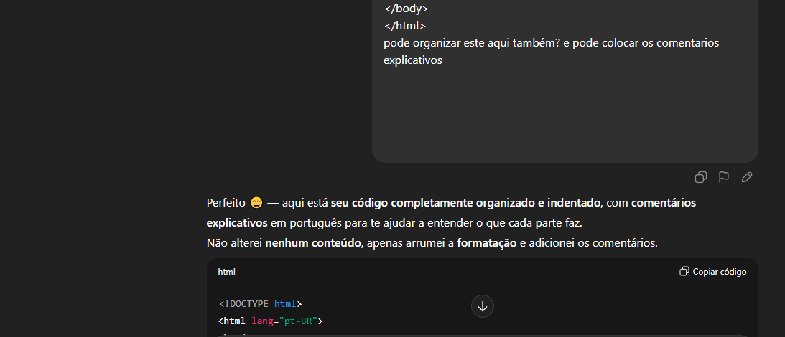

Primeiro, crie os arquivos principais. Para isso, crie uma pasta para armazenar todos os seus projetos.
Depois de criada, vá para o VS Code e clique em “Arquivo” e, em seguida, em “Abrir pasta”.
Agora, procure a pasta que você criou e passe o mouse sobre ela para aparecer a opção de “Novo arquivo”.
Em seguida, crie os seguintes arquivos: index.html, style.css e javascript.js (você pode mudar o nome se quiser).
Para criar a base de um arquivo HTML, digite “!” e pressione “TAB” no teclado.
Assim, você pode gerar automaticamente a estrutura principal e fazer algumas modificações interessantes.
No campo title, você pode alterar o texto que aparece na aba do navegador, ao lado do botão de fechar.
Para criar um título é simples: use a tag <h1> para o título maior.
Para criar um parágrafo, use a tag <p>.
Aqui estão algumas extensões que eu recomendo:
Onde ir para procurar as extensões
Para adicionar imagens é simples: use a tag <img>.
Dentro do atributo src="", coloque o nome do arquivo da sua imagem
(ela precisa estar na mesma pasta).
Exemplo: <img src="minhafoto.jpg">
O atributo alt serve para mostrar um texto alternativo caso a imagem não carregue.
É opcional mas recomendado, e para terminar tem o width, que define o tamanho da imagem.
Para juntar imagens, use uma class e utilize o
display: flex; ou display: inline-block; no CSS.
Para adicionar um link no seu site, use a tag
<a href="link_aqui">texto</a>.
Lembre-se de incluir o https:// no início do link,
senão ele pode não funcionar corretamente.
Caso queira que o link abra em outra guia, use:
<a href="link_aqui" target="_blank">Clique aqui</a>
Se quiser tirar o sublinhado do link, será necessário usar CSS.
Antes disso, você pode adicionar uma class ao link e, no CSS, usar:
.idk { text-decoration: none; }
Para colocar vídeos no HTML, use esta tag:
<video src="video2.mp4" controls></video>
Para colocar um áudio no HTML, use esta tag:
<audio src="musica.mp3" controls></audio>
Aqui você pode criar classes no HTML para usar no CSS.
Exemplo: <p class="agua">
Aí no CSS você coloca .agua { } e dentro das chaves usa os comandos para essa classe específica.
Também é possível usar a classe em uma <div>.
Aqui vão todos os tipos de margin:
• margin: 10px; — Todas as margens iguais• margin: 10px 20px; — Cima/Baixo = 10px, Esquerda/Direita = 20px• margin: 10px 20px 30px; — Cima = 10px, Lados = 20px, Baixo = 30px• margin: 10px 20px 30px 40px; — Cima, Direita, Baixo, Esquerda (sentido horário)• margin-top: 15px; — Espaço superior do elemento• margin-right: 20px; — Espaço à direita• margin-bottom: 25px; — Margem inferior• margin-left: 30px; — Margem à esquerda• margin: auto; — Centraliza o elemento horizontalmenteobrigado gpt por organizar o meu codigo tava todo bagunçado e por corrigir a caligrafia do codigo
